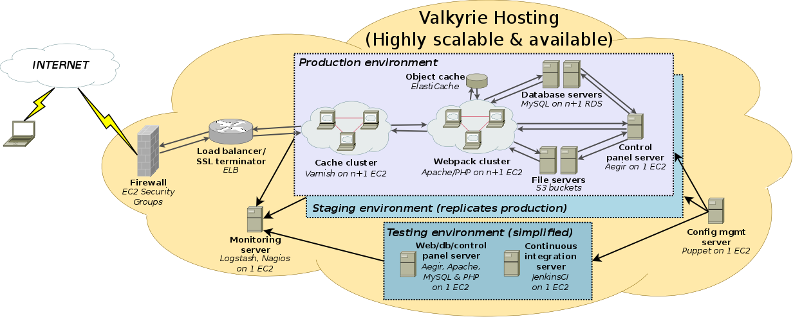

Diagrams¶
The diagrams below illustrate portions of the software stack, as well as both basic and high-availability network topologies.
We use Dia to design these diagrams. The source files can be found in diagrams/sources/.
Software stack¶
This diagram illustrates the various components required by a Drupal-based web application, and how Aegir manages them:
Todo
Figure out how to add the Aegir logo directly to the .dia.
Vagrant Network (Basic)¶
This diagram illustrates the network topology for a Valkyrie deployment in the AWS cloud:

Vagrant Network (High availability)¶
This diagram illustrates the network topology for a high-availability, fully scalable Valkyrie deployment in the AWS cloud:
